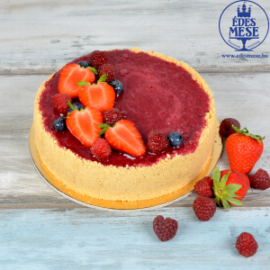

| Sorszáma |
Torta neve |
Kép |
Készítője |
Hol kóstolható |
Ár(Ft) |
Allergének |
Szeletek száma |
| 1 |
Tejcsokoládé-kardamom-körte |
|
Édes Város |
Budapest, Margit körút 8 |
16.500 |
tej, glutént tartalmazó gabonafélék, tojás, diófélék |
14 |
| 2 |
Mákvirág |
 |
Szamos |
Budapest Lövőház utca 2-6 |
19.800 |
teljes tejpor, tejszín, vaj, kis mennyiségben alkohol |
14 |
| 3 |
Égetett habos |
 |
Horváth Cukrászda |
Budapest, Közvágóhíd utca 24 |
15.600 |
tej, tojás |
8 |
| 4 |
Málnás fehércsoki torta |
 |
Szőke Cukrászda |
Debrecen úrrétje u 14-16 |
5.990 |
tej, tojás, búzafinomliszt |
16 |
| 5 |
Nour signature torta |
 |
Nour |
Budaörs, Felsőhatár utca 1 |
60.000 |
mogyoróvaj, földimogyoró, |
18 |
| 6 |
Dénes tudja torta |
|
Halász Cukrászda |
Szerencs, Zrínyi utca 3 |
10.990 |
glutén, tej, tojás |
16 |
| 7 |
Fehér csokoládés joghurtos citromtorta |
|
Szaletly Vendéglő és Kert |
Budapest, Stefánia út 93 |
11.200 |
tojás, glutén, laktóz, pisztácia |
8 |
| 8 |
Áfonyás mousse |
|
Édes Mese |
Érd, Egervári utca 71 |
25.000 |
tojás, teavaj, búzafinomliszt |
16 |
| 9 |
Gyümölcstorta |
|
Édes Mese |
Érd, Egervári utca 71 |
23.000 |
tojás |
13 |
| 10 |
Könyv torta |
 |
Ági Varázs Cukrászműhely |
Budapest Dalnoki Jenő utca 4 |
28.625 |
búzafinomliszt, búzarétesliszt, pasztőrözött tejszín, szójalecitin, tej, tejfehérje, tejszín, teljes tejpor, tojás |
20 |
| 11 |
Sajttorta gyümölcsös |
 |
Édes Mese |
Érd, Egervári utca 71 |
25.000 |
tojás, búzafinomliszt, teavaj, Ricotta sajt, Mascarpone sajt |
13 |
| 12 |
Vanília-eper-mandula torta |
|
Édes Város |
Budapest, Margit körút 8 |
18.600 |
tej, tojás |
12 |
| 13 |
Oroszkrém torta |
|
Édes Mese |
Érd, Egervári utca 71 |
25.000 |
tojás, búzafinomliszt, tejszín, tej, teavaj |
16 |
| 14 |
Kindertorta |
|
Édes Mese |
Érd, Egervári utca 71 |
25.000 |
tojás, búzafinomliszt, tejszín, tej |
16 |
| 15 |
Eper torta |
 |
Mandula cukrászdák |
Debrecen, Ember Pál utca 23 |
9.800 |
tejet-és tojást nem tartalmaz |
16 |
| 16 |
Répatorta |
|
Édes Mese |
Érd, Egervári utca 71 |
25.000 |
tojás, búzafinomliszt, sajtkrém, szentjánoskenyéliszt, teavaj, dió |
16 |
| 17 |
Tiramisu |
|
Édes Mese |
Érd, Egervári utca 71 |
18.000 |
Mascarpone sajt, tejszín, tojás, búzafinomliszt |
10 |
| 18 |
Manjari-birsalma-kalamansi |
|
Édes Város |
Budapest, Margit körút 8 |
30.000 |
tej, glutén, tojás, diófélék |
10 |
| 19 |
Vanília-eper-mandula torta |
|
Édes Város |
Budapest, Margit körút 8 |
18.600 |
tej, tojás |
12 |
| 20 |
Mozart torta |
|
Édes Város |
Budapest, Margit körút 8 |
17.450 |
tej, glutén, tojás, diófélék, földimogyoró |
8 |
| 21 |
galaktikus kávé-körte csoda |
 |
Édes Város |
Budapest, Margit körút 8 |
11.880 |
szójabab, diófélék |
6 |
| 22 |
Banán-Étcsokoládé-Mogyoróvaj torta |
|
Édes Város |
Budapest, Margit körút 8 |
17.400 |
tej, glutén, tojás, földimogyoró |
12 |
| 23 |
Dubai csoki torta |
 |
Édes Város |
Budapest, Margit körút 8 |
18.900 |
tej, glutén, tojás, diófélék |
5 |
| 24 |
Torta Delizia |
|
Édes Város |
Budapest, Margit körút 8 |
9.790 |
tej, glutén, tojás |
6 |
| 25 |
Torta Millefoglie |
|
Édes Város |
Budapest, Margit körút 8 |
9.790 |
tej, diófélék, glutén, tojás |
6 |
| 26 |
Torta Tropicane |
|
Édes Város |
Budapest, Margit körút 8 |
9.890 |
tej, glutén, tojás, diófélék, földimogyoró |
6 |